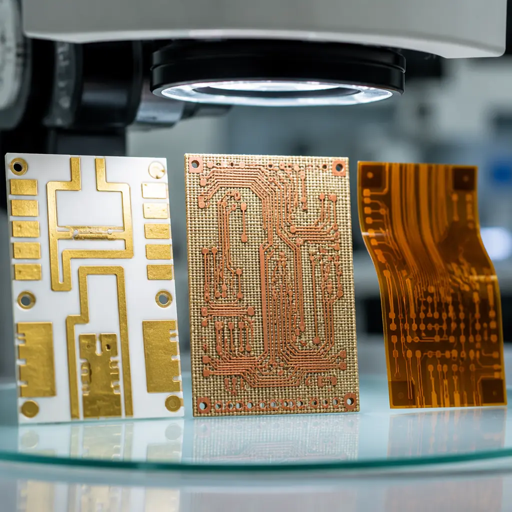
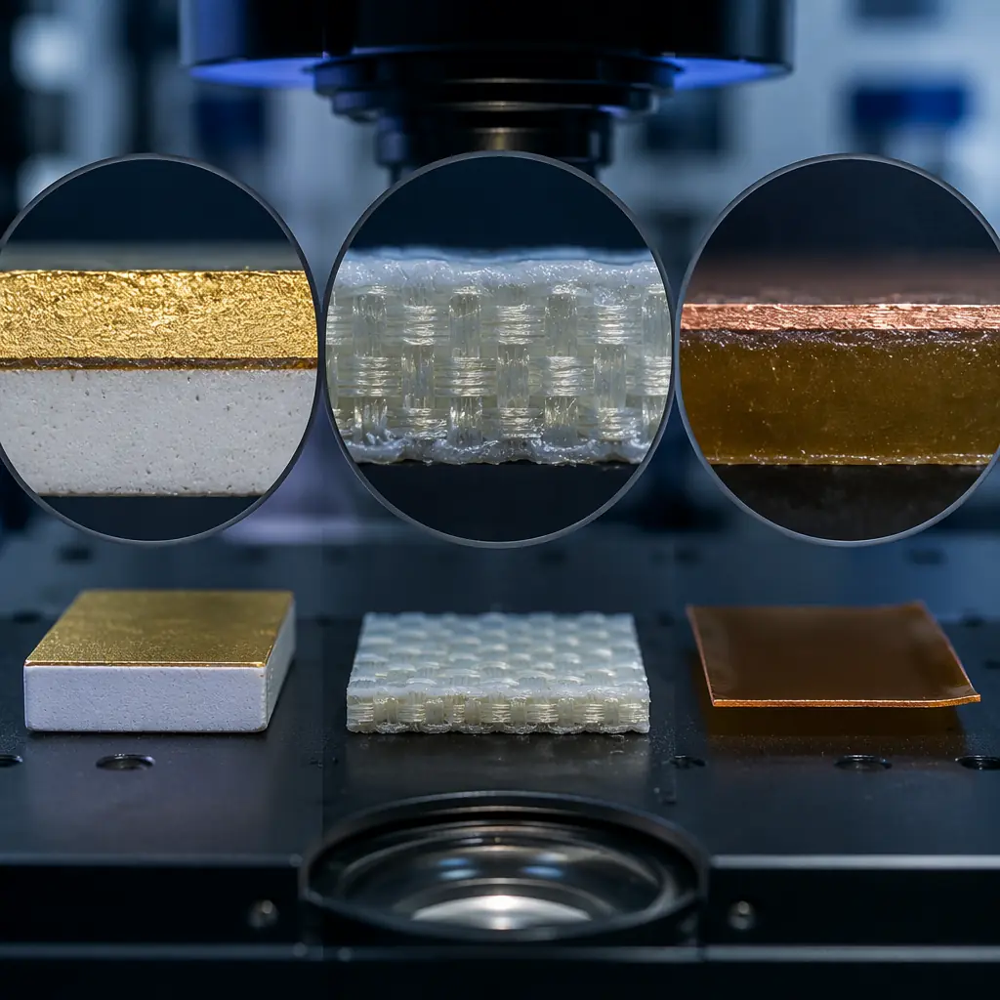

FR-4 is the default PCB material for 90%+ of all designs — and that's exactly the problem. When your design specification calls for continuous operation at 200°C, dielectric loss below 0.002 at 30 GHz, or thermal conductivity above 100 W/m·K, FR-4 isn't just suboptimal — it's physically incapable. The substrate itself becomes the limiting factor. This guide compares the three specialty materials that engineers reach for when FR-4 and standard high-Tg laminates hit their limits: ceramic, PTFE, and polyimide.
At Huaxing PCBA, we process all three substrate families across our manufacturing lines — ceramic circuits for aerospace sensors, PTFE multilayer boards for 5G base station antenna arrays, and polyimide flex and rigid-flex for downhole drilling tools. Each material demands different fabrication processes, and understanding those differences is essential before you commit to a stackup. For a baseline understanding of standard materials, start with our comprehensive PCB materials guide covering FR-4, High-Tg, Rogers, and aluminum substrates.

The Material Properties That Actually Matter
Datasheets are full of numbers. The four that determine substrate selection for extreme environments:
| Property | FR-4 (baseline) | Ceramic (Al₂O₃ 96%) | PTFE (woven glass) | Polyimide |
|---|---|---|---|---|
| Dk @ 10 GHz | 4.2–4.8 | 9.6–9.9 | 2.2–3.0 | 3.2–3.5 |
| Df @ 10 GHz | 0.017–0.025 | 0.0001–0.0004 | 0.0009–0.002 | 0.003–0.008 |
| Tg (°C) | 130–180 | N/A (melts >2,000°C) | N/A (Td ~400°C) | 250–400 |
| Thermal conductivity (W/m·K) | 0.3–0.4 | 20–170 | 0.2–0.3 | 0.12–0.35 |
| CTE X-Y (ppm/°C) | 12–16 | 6–8 | 12–24 | 12–20 |
| Relative cost (1× = FR-4) | 1× | 50–200× | 10–50× | 8–30× |
The numbers tell the story: ceramic dominates thermal performance, PTFE dominates RF loss, and polyimide fills the gap where flex and moderate high-temperature performance intersect. But the numbers don't capture fabrication complexity — and that's where cost overruns happen.
Ceramic PCB Substrates: When "Hot" Means 400°C, Not 150°C
Ceramic PCBs aren't a single material — they span a family with dramatically different properties depending on composition. The three mainstream options:
Alumina (Al₂O₃, 96% or 99.6%) — The Workhorse Ceramic
96% alumina is the most common ceramic PCB substrate, offering thermal conductivity of 20–24 W/m·K — roughly 60× better than FR-4. 99.6% alumina pushes this to 28–35 W/m·K with lower dielectric loss. The Dk of 9.6–9.9 means your transmission lines will be much narrower than on FR-4 (impedance scales with 1/√Dk), which is actually an advantage for miniaturization. Alumina handles continuous operation at 350°C+ and survives soldering temperatures that would carbonize organic substrates. Applications: LED modules (the dominant use case), power hybrid circuits, high-temperature sensors, automotive exhaust gas sensors, and downhole drilling electronics.
Aluminum Nitride (AlN) — Thermal Performance King
AlN delivers thermal conductivity of 140–170 W/m·K — approaching the performance of some metals — with a Dk of 8.6–8.9 and a CTE of 4.5 ppm/°C that closely matches silicon. This CTE match makes AlN the default substrate for direct-bond-copper (DBC) power modules where semiconductor die are soldered directly to the substrate. Cost is 3–5× higher than alumina — expect $500–1,500/m² vs $100–300/m² for 96% alumina. Applications: IGBT power modules, RF power amplifiers above 50W, laser diode submounts, and satellite power conditioning where the absence of organic outgassing matters in vacuum. See our power electronics PCB guide for thermal management strategies that pair with ceramic substrates.
Fabrication Reality: Why Ceramic PCBs Take 3× Longer
Ceramic substrates are brittle. They cannot be mechanically drilled with standard PCB tooling — laser drilling (CO₂ or UV) is required for vias, adding $50–150 per design to NRE. Copper is applied via thick-film printing (screen-printed conductive paste fired at 850°C) or thin-film sputtering (vacuum deposition + photolithography). Minimum trace width on thick-film ceramic is typically 125–150µm (5–6 mil), vs 75µm (3 mil) for standard PCB etching. Thin-film ceramic achieves 10µm traces — essential for RF circuits at mmWave frequencies above 30 GHz. Our RF PCB design guide covers impedance requirements that make thin-film ceramic attractive for 5G and radar applications.

PTFE (Teflon) Substrates: RF Performance Above 20 GHz
PTFE-based laminates — most famously the Rogers RO3000 and RO4000 families — are the gold standard for RF and microwave PCBs. The ultra-low dielectric constant (Dk 2.2–3.0) and dissipation factor (Df 0.0009–0.002) mean signal loss per inch at 30 GHz is a fraction of what you'd see on FR-4, where Df above 0.02 makes anything beyond 5 GHz impractical for long traces.
Pure PTFE vs Ceramic-Filled PTFE — The Tradeoff
Pure PTFE (woven glass-reinforced, e.g., Rogers RT/duroid 5880) offers the lowest Df (0.0009 at 10 GHz) and lowest Dk (2.20) — ideal for mmWave antennas and satellite communications above 30 GHz. But pure PTFE has a CTE of ~24 ppm/°C in the Z-axis, which can cause plated-through-hole barrel cracking under thermal cycling. Ceramic-filled PTFE (e.g., Rogers RO3003, RO3035) loads the PTFE with ceramic powder to bring the CTE down to ~17 ppm/°C — closer to copper's 17 ppm/°C — dramatically improving PTH reliability, at the cost of slightly higher Dk (3.0 vs 2.2) and Df (0.0013 vs 0.0009). For most designs below 40 GHz, ceramic-filled PTFE is the pragmatic choice. See our telecom and 5G PCB guide for the specific material requirements of base station and antenna designs.
PTFE Fabrication Challenges — Why Many Shops Won't Touch It
PTFE is soft, chemically inert, and cold-flows under pressure. Standard PCB drilling generates smeared, hairy hole walls that conventional desmear chemistry cannot clean — PTFE resists almost all solvents by design. Fabrication requires plasma etching (fluorine-based gas plasma, typically CF₄/O₂) to activate the hole wall surface before copper plating. This adds $200–500 per panel in processing cost and requires equipment that many PCB shops don't have. Multilayer PTFE boards need bonding films (low-melt PTFE or hydrocarbon thermoset prepregs) rather than standard FR-4 prepregs, and lamination cycles run 3–6 hours at precisely controlled temperatures vs 1–2 hours for FR-4.
Key Takeaway: PTFE is a fabrication-difficult material, not an exotic one. The material cost is 10–50× FR-4, but the processing cost — plasma etch, specialized bonding films, longer lamination cycles, and lower first-pass yield — often exceeds the material premium. Budget 3–5× the total board cost of an equivalent-layer-count FR-4 board, not just 10× the laminate price.
Polyimide Substrates: The Flex and High-Temperature Bridge
Polyimide straddles the space between standard organic laminates and exotic ceramics. With a Tg of 250°C (standard polyimide) to 400°C (high-performance grades like Upilex-S), it handles soldering temperatures easily and survives continuous operation at 200°C — well beyond FR-4's limit but below ceramic territory.
Polyimide Flex — The Ubiquitous Option
Polyimide flex circuits — a sandwich of polyimide film (25–125µm thick) with rolled-annealed copper foil and acrylic or epoxy adhesive — are the standard for dynamic flex applications. Bend reliability exceeds 100 million cycles at bend radii above 10× the total thickness. The Dk of 3.2–3.5 and Df of 0.003–0.008 make polyimide flex suitable for digital signals up to ~5 Gbps — fine for most consumer and industrial applications, but lossy for high-frequency RF above 10 GHz. For detailed flex design rules, our flex PCB design guide covers bend radius calculations and stiffener placement.
Rigid Polyimide Laminates — High-Temp Without the Flex
Polyimide resin systems are also available as rigid laminates (e.g., Arlon 85N, Isola P95) for high-temperature rigid PCBs. Unlike flex polyimide, these use woven glass reinforcement and a polyimide resin matrix. Tg ranges from 250–280°C with decomposition temperature (Td) above 400°C. Z-axis CTE is typically lower than FR-4 (~45 ppm/°C vs 55–70 for standard FR-4), improving PTH reliability under thermal cycling. Rigid polyimide boards are the go-to for downhole drilling tools (180–225°C continuous), jet engine sensor electronics, and military avionics requiring MIL-PRF-31032 qualification. Cost premium: 8–15× over FR-4 for the laminate alone. Our aerospace & defense PCB guide covers the qualification requirements for these applications.
Rigid-Flex With Polyimide — The Best of Both Worlds
Polyimide is the flex layer in every rigid-flex PCB. The rigid sections use FR-4 or polyimide rigid laminates, and the flex layers use polyimide film. This combines the high-density routing of rigid boards with the three-dimensional packaging flexibility of flex circuits — critical for aerospace, medical implants, and military wearable electronics where space constraints are extreme. The fabrication complexity is high: rigid-flex requires sequential lamination with precisely aligned flex layer openings in the rigid sections. Typical yield on a 6-layer rigid-flex with 2 flex layers is 85–92%, compared to 96–99% for an equivalent rigid-only board. Our rigid-flex manufacturing guide covers the design rules and cost factors in detail.
How to Choose: The Decision Matrix
The substrate decision comes down to three questions, answered in order:
What's Your Maximum Operating Temperature?
<130°C → FR-4 is fine. 130–180°C → High-Tg FR-4 or polyimide. 180–250°C → Polyimide (rigid or flex). 250–400°C → Ceramic (alumina). >400°C → Ceramic (alumina or AlN), but note that solder melts at ~220°C (SAC305), so attach methods shift to sintered silver, gold-germanium eutectic, or wire bonding at these temperatures. Read our thermal management guide for heat dissipation strategies that work across substrate types.
What's Your Maximum Frequency?
<1 GHz → Any material works, including FR-4. 1–5 GHz → High-performance FR-4 or polyimide if traces are kept short. 5–20 GHz → PTFE (ceramic-filled) or thin-film ceramic. >20 GHz → Pure PTFE or thin-film ceramic. At 77 GHz (automotive radar), the difference between Df=0.002 (PTFE) and Df=0.008 (polyimide) is approximately 4× the insertion loss per inch — your 2-inch trace that loses 1 dB on PTFE loses 4 dB on polyimide, cutting your effective range in half. For high-frequency design rules, see our signal integrity guide and impedance control deep-dive.
Do You Need Flexibility?
Yes → Polyimide flex or rigid-flex is the only game in town. Neither ceramic nor PTFE supports dynamic flex — ceramic shatters, and PTFE cold-flows and deforms permanently. If the flex requirement is static (form-in-place only, not dynamic), PTFE flex materials exist but are rare and expensive. For most designs, polyimide is the flex substrate, period.
Decision Shortcut: Ceramic = thermal conductivity above 20 W/m·K or temperature above 250°C. PTFE = frequency above 20 GHz with loss below 1 dB/inch. Polyimide = flex required OR temperature 180–250°C without needing ceramic-level thermal conductivity. Most designs beyond FR-4 land on polyimide.
Summary: Pick the Substrate That Matches Your Physics, Not Your Comfort Zone
The substrate decision is ultimately a physics problem, not a preference. The temperature at which your dielectric decomposes, the dielectric loss that turns your 77 GHz signal into noise, and the thermal resistance that cooks your power transistors — these are hard limits set by material properties, not by your PCB vendor's capabilities.
At Huaxing PCBA, we fabricate across all three substrate families: alumina and AlN ceramic circuits (thick-film and thin-film), PTFE multilayer RF boards (including mixed-stackup designs with FR-4 sub-cores for cost optimization), and polyimide flex and rigid-flex assemblies. Our engineering team can review your stackup and recommend the most cost-effective substrate that meets your electrical and thermal requirements. Submit your design specifications for a material selection review — we'll confirm whether your chosen substrate is right, or recommend a better one.